The transition of the Indian power sector toward a high-renewable energy grid is a project of unprecedented industrial scale, requiring the integration of massive quantities of stationary storage to manage the inherent intermittency of solar and wind generation. As the nation pursues its target of 500 GW of non-fossil fuel-based capacity by 2030, the requirement for Battery Energy Storage Systems (BESS) has moved from a theoretical necessity to a commercial and regulatory imperative.
Within this context, the question of localization—defined as the percentage of a BESS that can be realistically designed, manufactured, and integrated within India—becomes central to the nation's energy security and fiscal health. While India has historically operated as an import-dependent market for advanced battery technologies, the year 2026 marks a transformative breakout period where policy mandates, fiscal incentives, and private sector execution are converging to redefine the ceiling of domestic value addition.
The Regulatory Framework and the Mandate for Domestic Value Addition
The current landscape of BESS localization in India is dictated by a sophisticated interplay of government mandates and viability gap funding (VGF) requirements. As of late 2025 and early 2026, the Ministry of Power has established a definitive floor for localization. A central directive issued in December 2025 requires all BESS projects supported under the VGF scheme to meet a minimum 20% local content threshold. This mandate was issued in response to requests from multiple states seeking exemptions from the Public Procurement (Preference to Make in India) Order. The Ministry’s rejection of these waivers signaled a firm policy stance: the build-out of India's storage infrastructure must be accompanied by the development of a domestic industrial base.
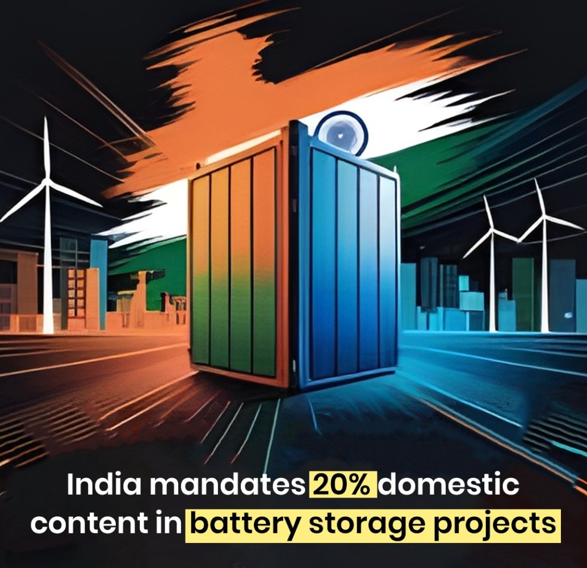
The 20% domestic value addition (DVA) requirement serves as an initial benchmark, intended to be achievable even in the absence of a fully operational domestic cell manufacturing ecosystem. Under the second tranche of the VGF scheme, which provides ₹5,400 crore in support for 30 GWh of standalone BESS, this 20% requirement is a non-negotiable condition for the disbursement of funds. The calculation of this percentage includes the total project cost, which encompasses hardware, software, and labor. By mandating that indigenously developed Energy Management System (EMS) software be part of this 20%, the government is effectively ensuring that the intellectual brain of the BESS is localized, even if the muscles—the battery cells—remain imported in the near term.
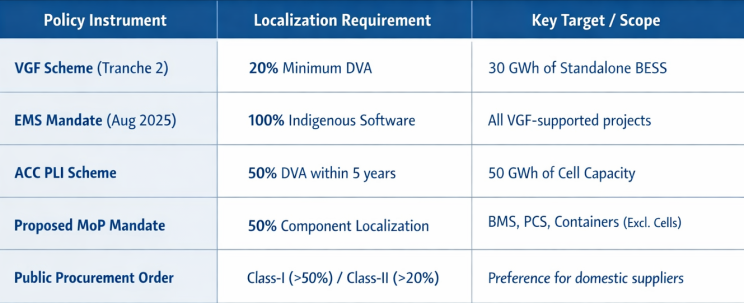
Component-Level Realities: What Can Be Localized Today?
A Battery Energy Storage System is not a monolithic product but a complex integration of electrochemical, electronic, and structural components. The realistic percentage of localization today varies significantly across these different layers of the value chain. To understand the 20% to 50% localization gap, one must analyze the domestic capability for each major subsystem.
Structural Components and Balance of Plant
The structural housing of a BESS, including the specialized containers, thermal management systems (HVAC), and electrical balance of plant (BoP), represents the most immediate opportunity for high localization. These components typically account for 20% to 30% of the total hardware cost. India possesses a robust manufacturing base for heavy electrical equipment, structural steel, and industrial cooling systems. Consequently, for utility-scale projects, the containers and mechanical systems can be localized at levels exceeding 80% to 90%. The electrical BoP, which includes transformers, switchgear, cabling, and safety systems, is also largely sourced from established domestic giants and local subsidiaries of global OEMs, contributing significantly to the overall DVA.
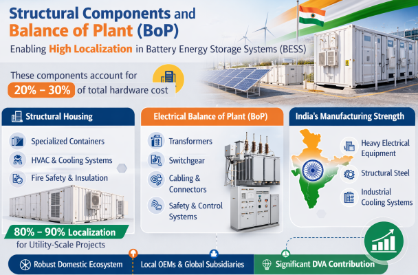
Power Conversion Systems and Grid Interface
The Power Conversion System (PCS), often referred to as the inverter system, is responsible for the bidirectional conversion of DC power from the batteries to AC power for the grid. The PCS accounts for approximately 15% to 25% of the total hardware cost. While core power semiconductors (such as IGBTs and MOSFETs) are still largely imported from East Asia and Europe, the assembly of the PCS, including the PCBs, magnetics, and thermal assemblies, is increasingly being localized in India. Global firms like Sineng Electric have established manufacturing footprints to deliver high-capacity PCS units for flagship Indian projects, such as the Adani Group Khavda energy park. Industry analysts suggest that while the silicon content remains imported, the value addition in the assembly and integration of the PCS allows for a localization level of 30% to 50% by cost.
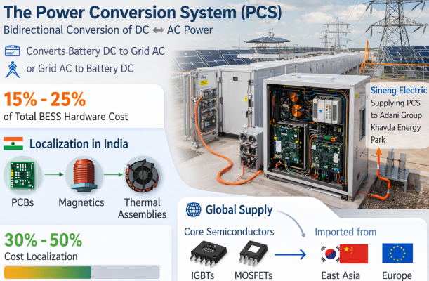
The Software Layer: Energy Management and Control
The Energy Management System (EMS) and Battery Management System (BMS) constitute the control layer of the BESS. The Ministry of Power's mandate for indigenous EMS software represents a strategic move to localize 100% of the software value. India’s vast pool of software engineering talent makes this one of the most viable segments for rapid localization. However, the BMS—which monitors cell-level parameters like voltage and temperature—requires a tight integration between hardware (sensors and microcontrollers) and software. While the software can be localized, the high-precision electronic components for the BMS are still primarily imported. Proposed government mandates seek to push BMS hardware localization toward 50%, excluding the microchips.
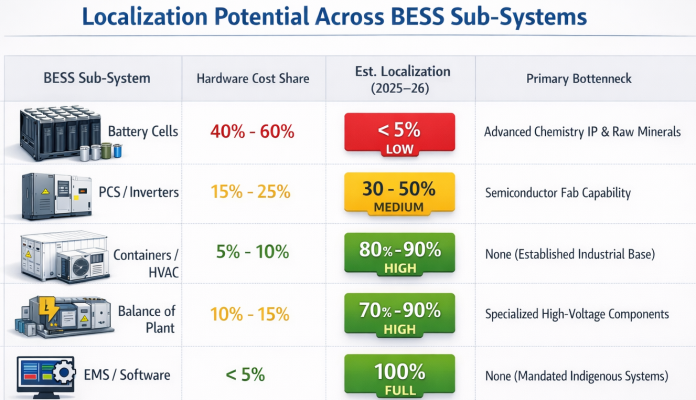
The Advanced Chemistry Cell (ACC) Hurdle: The Heart of the Import Dependence
The most significant obstacle to achieving localization levels above 30% of the total BESS cost is the battery cell. The cell is the most expensive single component of the system, yet India currently possesses almost zero operational capacity for advanced chemistry cell manufacturing. The National Programme on Advanced Chemistry Cell (ACC) Battery Storage, a Production Linked Incentive (PLI) scheme with an ₹18,100 crore outlay, was designed to address this gap by incentivizing the establishment of 50 GWh of domestic capacity.
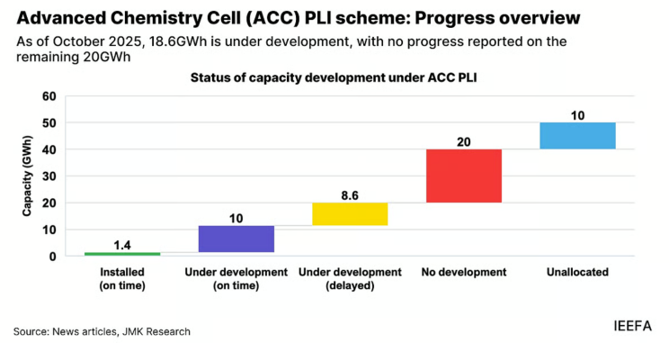
However, the progress of the ACC PLI scheme has been significantly delayed. As of October 2025, only 2.8% (1.4 GWh) of the targeted 50 GWh capacity had been commissioned, exclusively by Ola Electric . Beneficiaries such as Reliance Energy , Rajesh Exports Ltd , and Ola have faced a range of implementation challenges, including stringent domestic value addition requirements and the aggressive two-year installation timeline.
A critical bottleneck has been the delay in visa approvals for Chinese technical specialists, who are essential for the installation and calibration of the highly specialized equipment required for cell manufacturing. Furthermore, first-generation Indian cell plants are projected to operate at only 60% to 70% of the cost efficiency of Chinese plants until they reach a scale of at least 10 GWh, maintaining a high near-term reliance on imports for cost-competitive projects.
The Impact of the 2026 Breakout Year
Despite these early delays, 2026 is projected to be a breakout year for the sector, with nearly 5 GWh of BESS capacity expected to come online—a tenfold jump from the 507 MWh installed in 2025. This surge is driven by a massive pipeline of projects moving from the tendering phase to the execution phase. Major landmarks, such as Adani's 1,126 MW / 3,530 MWh project in Gujarat, will serve as crucial testing grounds for the industry's ability to deliver large-scale systems at the aggressive price points discovered in 2025. The commissioning of these projects will create a steady demand for localized pack assembly, even if the cells themselves are sourced globally in the interim.
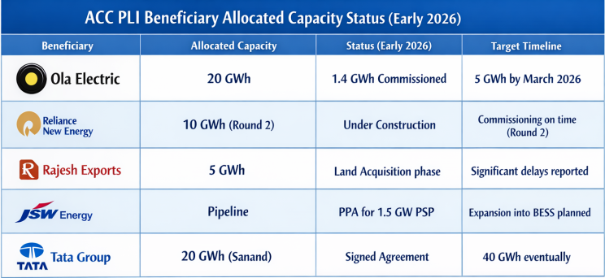
Upstream Constraints: The Critical Mineral Supply Chain
Even as India moves to localize cell assembly and eventually cell manufacturing, it remains tethered to global supply chains for the raw materials that constitute the active materials of the battery. Cathodes and anodes account for nearly 65% of a battery cells cost. These components require high-purity lithium, cobalt, nickel, and graphite—minerals for which India has limited primary resources.
The National Critical Minerals Mission (NCMM), approved in early 2025, represents a strategic effort to secure these minerals through domestic exploration and international partnerships. The Geological Survey of India (GSI) has intensified its search for lithium in regions like Jammu and Kashmir, while Khanij Bidesh India Limited (KABIL) has secured mining rights for lithium brine blocks in Argentina. However, mining is only the first step; the midstream refining and processing of these minerals into battery-grade chemicals is where the real value—and the real dependency—lies.
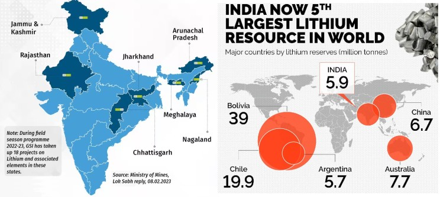
Currently, China controls over 85% of global rare earth processing capacity and a dominant share of lithium chemical conversion. India's plan to develop four mineral processing parks by 2030 is a long-term strategy that will not yield significant results in the today of 2026 localization.
The Role of Battery Recycling
In the absence of primary mineral resources, battery recycling is emerging as a vital localized source of raw materials. The government has approved a ₹1,500 crore incentive scheme for critical mineral recycling to support the recovery of lithium, cobalt, and nickel from end-of-life batteries. By 2026, as the first wave of electric vehicle and electronic waste batteries reaches the end of its life, the recycling sector is expected to become a growing supplier of domestically sourced recycled salts. This urban mining offers a pathway to localization that bypasses the geopolitical and environmental hurdles of traditional mining.
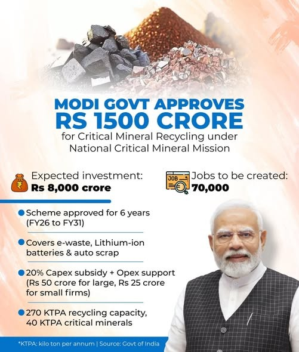
Economic and Fiscal Drivers of Localization
The financial viability of localizing BESS is heavily influenced by the global cost curve and domestic fiscal interventions. In 2025, the global Levelized Cost of Storage (LCOS) for a four-hour BESS project fell to $78/MWh, making solar-plus-storage an economically compelling alternative to traditional firm power. In India, this has translated into a dramatic collapse of tariffs. Standalone two-hour BESS tariffs plummeted from ₹2.21 lakh/MW/month in early 2025 to ₹1.48 lakh/MW/month by year-end.
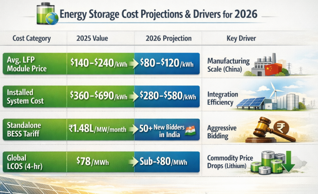
The Union Budget 2026-27 provided a critical policy boost by extending Basic Customs Duty (BCD) exemptions for capital goods used in lithium-ion cell manufacturing to include equipment specifically deployed for BESS applications. This measure helps reduce the upfront project and manufacturing costs, enhancing the viability of BESS projects amid aggressive tariff compression. Additionally, the doubling of the outlay for the Electronics Component Manufacturing Scheme (ECMS) to ₹40,000 crore supports the transition from simple assembly to a more integrated domestic electronics ecosystem, which is essential for localizing BMS and PCS components.
The Industrial Ecosystem: From Assembly to Depth
The shift in India's EV and energy storage journey is characterized by a move from adoption-led growth to deeper manufacturing capability. Leading battery manufacturers are no longer just focused on putting packs together; they are investing in advanced thermal management systems, lifecycle optimization, and specialized chemistry like LFP and silicon-carbon anodes. For instance, Himadri Speciality Chemical Ltd. has announced plans for a 200,000 MTPA LFP cathode active material facility, while Epsilon Advanced Materials Pvt. Ltd. is investing ₹9,000 crore in a synthetic graphite anode plant in Karnataka.
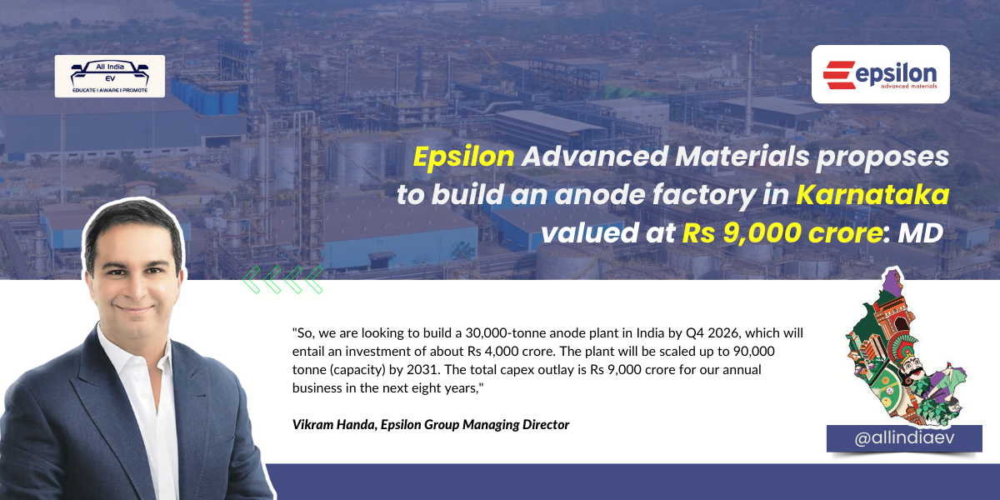
Mastering these midstream processes—the production of cathodes, anodes, and specialty chemicals—is the unseen architecture that will determine India's long-term localization percentage. While the realistic localization today (early 2026) is heavily weighted toward soft costs, structural components, and software, the foundation for a 50% to 70% localized BESS is being laid through these midstream investments and the slow but steady progress of the gigafactories.
The Infrastructure Bottleneck: Grid Evacuation and Financing
While manufacturing and localization are critical, the actual deployment of BESS is often hindered by infrastructure constraints. Renewable energy growth in India is currently outpacing transmission capacity, with new projects sometimes facing delays of three to six years for grid connection. Furthermore, the aggressive underbidding seen in 2025 has raised concerns about the bankability of these projects. Analysts warn that while the low tariffs demonstrate market confidence, the real test lies in delivering these projects at the promised price points amid battery cost uncertainties and financing constraints.
To address this, the Central Electricity Regulatory Commission (CERC) has issued draft rules that would allow regulated utilities to recover investment and operating costs for battery storage projects. This move aims to establish a clear tariff mechanism, defining how BESS projects are evaluated and run, thereby reducing the perceived risk for investors and lenders.
The Future Trajectory: Towards 2032 and Beyond
The long-term outlook for India's BESS sector is one of exponential growth. The Central Electricity Authority (CEA) projects a BESS requirement of 236.22 GWh by 2031-32, increasing to 1,840 GWh by 2047. Achieving this will require a Viksit Bharat level of industrial transformation.
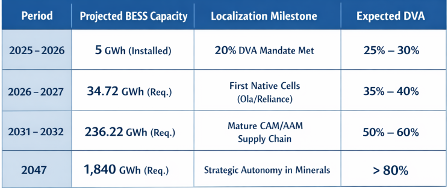
In the near term, the most realistic path to increasing the localization percentage involves:
- Scaling Pack Assembly: Moving beyond importing finished BESS containers to importing cells and conducting all pack assembly, BMS integration, and thermal management locally.
- Domesticating the Power Electronics: Leveraging the ECMS and Semiconductor Mission to produce more of the PCS components domestically, even if the silicon remains imported.
- Mandatory Software Integration: Ensuring that every BESS deployed on the Indian grid uses indigenously developed control software to enhance grid resilience and security.
Synthesis and Conclusion
The percentage of a BESS that can be realistically localized in India today is approximately 25% to 35% when considering the total project cost. This percentage is composed of 100% localization in soft costs (labor, permitting, civil works), high localization in structural and mechanical components (containers, HVAC, BoP), and mandated localization in the software layer (EMS). The primary deficit remains the battery cell, which accounts for the largest portion of hardware value and remains almost entirely imported.